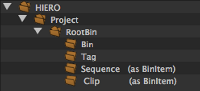
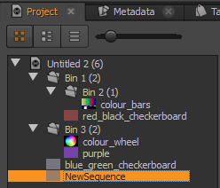
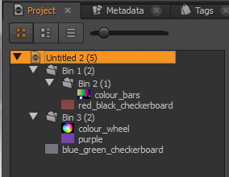

Navigation
- index
- modules |
- next |
- previous |
-
 Python Dev Guide »
Python Dev Guide »
All Python objects related to data manipulation in Hiero are placed in the hiero.core namespace within the following structure:
Before using hiero.core, import the necessary symbols using:
from hiero.core import *
We can get elements contained by an object using the items method:
for item in myProject.clipsBin().items():
print item
Every Python object in Hiero has a name:
myProject.name()
item.name()
Here is an example of some items loaded into Hiero:
Note
To create the example shown above, copy and paste this example script into the Script Editor and execute it.
There are a number of items shown there that you might want access to in Python.
To access the project, you could get a reference to the Python object for it by name using the project method or, if it’s the last project loaded, by taking the last item in the project list. For example:
from hiero.core import *
# get the last loaded project
myProject = projects()[-1]
# get the project by name
myProject = project("Untitled 2")
Either of the above methods work, and return a Project object.
Once you have a project, you might want to get at the clips it contains. Project objects have two top level bin containers: the clips bin, and the tags bin. To access either of these bins, you can use the clipsBin and the tagsBin methods.
clipsBin = myProject.clipsBin()
The clipsBin and the tagsBin methods both return Bin objects. Bin objects contain lists of other Bin objects as well as BinItem objects.
BinItem objects are the containers used to hold Clips and Sequences. Most access to Clips and Sequences, once they are held onto by a Bin object, is through BinItem objects.
To get a list of all of the items contained by a Bin object, use any of the clips, sequences, bins or items methods.
clips = clipsBin.clips()
sequences = clipsBin.sequences()
bins = clipsBin.bins()
allItems = clipsBin.items()
certainItemTypes = clipsBin.items(Bin.ItemType.kClip | Bin.ItemType.kSequence)
print "clips: " + str(clips)
print "sequences: " + str(sequences)
print "bins: " + str(bins)
print "allItems: " + str(allItems)
print "certainItemTypes: " + str(certainItemTypes)
Given the example project loaded in Hiero, shown at the top of this document, the code above shows the following:
clips: (BinItem('blue_green_checkerboard'),)
sequences: (BinItem('NewSequence'),)
bins: (Bin('Bin 1'), Bin('Bin 3'))
allItems: (Bin('Bin 1'), Bin('Bin 3'), BinItem('blue_green_checkerboard'), BinItem('NewSequence'))
certainItemTypes: (BinItem('blue_green_checkerboard'), BinItem('NewSequence'))
To access the clip or sequence item contained by a BinItem object, use its activeItem method:
clip = clips[0].activeItem()
sequence = sequences[0].activeItem()
To access a clip’s media, you can get its MediaSource using the mediaSource method
mediaSource = clip.mediaSource()
Once you have a MediaSource object, you can find the path to its media using the fileinfos method. The fileinfos method returns a tuple of MediaFileInfo objects, from which you can retrieve the file path for the media on disk from:
files = mediaSource.fileinfos()
for file in files:
print file.filename()
Note
MediaSource objects can contain references to multiple files, which is why the fileinfos method returns a tuple. It is best not to assume that there will only be one item in the tuple returned.
To start off with, let’s clear the currently loaded projects out. Assuming that you’ve already imported hiero.core, you can call the closeAllProjects method:
closeAllProjects()
Now you want to create a new project. Use the newProject method:
myProject = newProject()
To create Bin objects, you can just initialise a new Bin object, supplying the name to the initialiser method:
bin1 = Bin("Bin 1")
bin2 = Bin("Bin 2")
bin3 = Bin("Bin 3")
To make a bin a child of another bin, use the addItem method:
bin1.addItem(bin2)
To add the bins to the project, and display them in the bin view, add the bins to the clipsBin for the project:
clipsBin = myProject.clipsBin()
clipsBin.addItem(bin1)
clipsBin.addItem(bin3)
Note
Attached vs Unattached
There are two different ways/conventions when creating and manipulating objects in Hiero: attached and unattached. Attached objects are those that have been inserted as a child of a Project object in some way. In the above code, calling addItem on the clipsBin attaches bin1 and bin3 to the project. It also attaches bin2 to the project, as bin2 is a child of bin1.
The two important things to note about attached objects are:
Unattached objects are those that have not been made a child, directly or indirectly, or a Project object. The two important things to note about unattached objects are:
To create a clip, you’ll want to first create a MediaSource.
We can do this using the sample resources provided with Hiero, but we’ll first have to find them on your system. You can do that with the following code:
import PySide.QtCore
import os.path
hieroExecutablePath = PySide.QtCore.QCoreApplication.applicationDirPath()
if platform.system() == "Darwin":
hieroExecutablePath = os.path.join(hieroExecutablePath, "..")
resourcesPath = str(os.path.abspath(os.path.join(hieroExecutablePath, "Documentation", "Python", "Resources")))
print resourcesPath
We can create new MediaSource objects by initialising them with the path to sources on disk, like so:
source1 = MediaSource(os.path.join(resourcesPath, "blue_green_checkerboard.mov"))
source2 = MediaSource(os.path.join(resourcesPath, "red_black_checkerboard.mov"))
source3 = MediaSource(os.path.join(resourcesPath, "colour_bars.mov"))
source4 = MediaSource(os.path.join(resourcesPath, "colour_wheel.mov"))
source5 = MediaSource(os.path.join(resourcesPath, "purple.######.dpx"))
Now we can create some clips from the MediaSources objects:
clip1 = Clip(source1)
clip2 = Clip(source2)
clip3 = Clip(source3)
clip4 = Clip(source4)
clip5 = Clip(source5)
And lastly, we can attach the clips to the project:
clipsBin.addItem(BinItem(clip1))
bin1.addItem(BinItem(clip2))
bin2.addItem(BinItem(clip3))
bin3.addItem(BinItem(clip4))
bin3.addItem(BinItem(clip5))
Note
As mentioned in previous sections, Clip objects are wrapped in BinItems before they can be stored in Bins.
Your project should now look like this:
To create a new sequence and add it to the project, do the following:
sequence = Sequence("NewSequence")
clipsBin.addItem(BinItem(sequence))
Note
As mentioned in previous sections, Sequence objects are wrapped in BinItems before they can be stored in Bins.
Sequences consist of VideoTracks and AudioTracks, which are composed of TrackItems. To create a track, create either a VideoTrack or an AudioTrack, like so:
track = VideoTrack("VideoTrack")
Next, given a source clip, you can create and initialise TrackItems like so:
# create the item
trackItem = track.createTrackItem("Shot23")
# set its source clip
trackItem.setSource(clip1)
# set its timeline values
trackItem.setTimelineIn(0)
trackItem.setTimelineOut(trackItem.sourceDuration() - 1)
# add it to the track
track.addItem(trackItem)
To add the track to the sequence, just call the addTrack method:
sequence.addTrack(track)
See the create_example.py for an example of creating a Project, adding some clips to it and creating a sequence. After running that, you should have a bin view that looks like this (as shown at the top of this page):